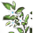
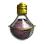
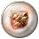
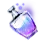

+
Pure Powder Reagent
🔗
+
Grass
1
🔗
Weeds
Wild Grass
+
Purified Water
1
🔗
Bottle of Clean Water
1
Bottle of River Water
1
+
 Silver Azalea
1
🔗
+
Nodes
🔗
Balenos Forest - Gathering
Cheapest Route To: Heidel (5CP)
(1CP) Bartali Farm
(2CP) Balenos Forest
(2CP) Balenos Forest - Gathering
Cron Castle Site - Gathering
Cheapest Route To: Velia (4CP)
(1CP) Forest of Plunder
(1CP) Ehwaz Hill
(1CP) Cron Castle Site
(1CP) Cron Castle Site - Gathering
Gavinya Coastal Cliff - Gathering
Cheapest Route To: Arehaza (9CP)
(1CP) Nothern Sand Dune
(3CP) Gavinya Volcano Zone
(2CP) Gavinya Great Crater
(1CP) Gavinya Coastal Cliff
(2CP) Gavinya Coastal Cliff - Gathering
Gervish Mountains - Gathering
Cheapest Route To: Duvencrune (7CP)
(2CP) Night Crow Post
(2CP) Garmoths Nest
(1CP) Gervish Mountains
(2CP) Gervish Mountains - Gathering
+
Sugar
1
🔗
NPC Food Vendor or Innkeeper.
+
Used In Recipe
+
Alchemy
🔗
Elixir of Assassination
5
Elixir of Brawn
5
Elixir of Carnage
7
Elixir of Detection
6
 Elixir of Endurance
1
Elixir of Energy
1
Elixir of Life
1
Elixir of Sky
6
Elixir of Will
1
Gem Polisher
1
Grim Reaper's Elixir
4
Imperfect Alchemy Stone of Destruction
10
Legendary Beast's Blood
1
Plywood Hardener
1
 Purified Lightstone of Earth
50
Purified Lightstone of Flora
50
 Refined Delotia Reagent
1
Tyrant's Blood
1
+
Processing
🔗
+
Grinding
Sturdy Snow White Stone
10
And More...
+
Notes
- Hoe Gather at Behr for Weeds/Wild Grass.
 Balenos Forest - Gathering
Cron Castle Site - Gathering
Gavinya Coastal Cliff - Gathering
Gervish Mountains - Gathering
Balenos Forest - Gathering
Cron Castle Site - Gathering
Gavinya Coastal Cliff - Gathering
Gervish Mountains - Gathering